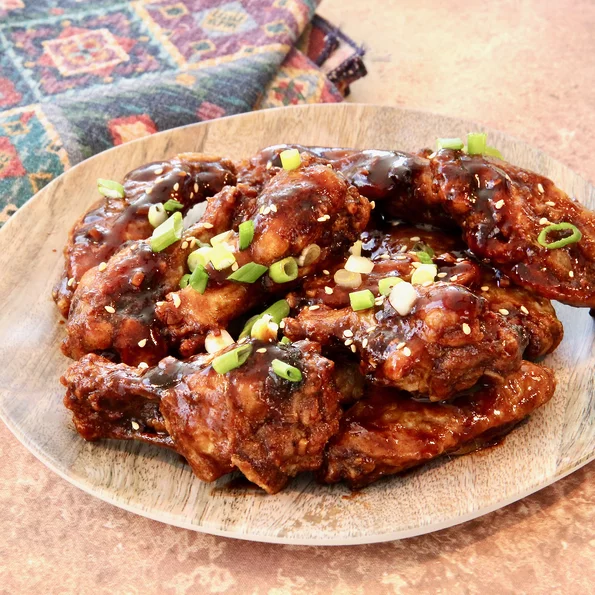

Air Fryer Balsamic-Glazed Chicken Wings

Description
Put a big stack of napkins on the table because once you start eating these crispy, sticky, sweet glazed chicken wings, you won't want to stop. This can be an appetizer for four or main course for two.
Ingredients
- cooking spray
- 3 Tablespoons baking powder
- 1 1/2 teaspoons salt
- 1 1/2 teaspoons ground black pepper
- 1 tespoon paprika
- 2 pounds chicken wings
- 1/3 cup water
- 1/3 cup balsamic vinegar
- 2 tablespoons soy sauce
- 2 tablespoons honey
- 2 tablespoons chili sauce
- 2 cloves garlic
- 1 teaspoon water
- 1/4 teaspoon cornstarch
Steps
- Preheat an air fryer to 380 degrees F (190 degrees C). Coat the fryer basket with cooking spray.
- Whisk baking powder, salt, pepper, and paprika together in a small bowl. Place baking powder mixture in a bag, add some of the chicken wings, and shake the bag to coat. Remove wings from the bag, shaking off excess powder, and repeat until all wings are coated with baking powder mixture.
- Lightly spray the wings with cooking spray, place in the prepared air fryer basket, and cook for 20 minutes, shaking and flipping the wings halfway through. Increase the temperature to 400 degrees F (200 degrees C) and cook until crispy, about 5 minutes more. Depending on the size of your air fryer, you may have to cook the wings in batches.
- Meanwhile, combine 1/3 cup water, balsamic vinegar, soy sauce, honey, chili sauce, and garlic in a saucepan over medium heat. Bring to a low boil and cook until sauce has reduced, about 15 minutes. Whisk together 1 teaspoon water and cornstarch in a small bowl and pour into the sauce; stir until sauce has thickened.
- Place crispy wings into a large bowl, drizzle with sauce, and toss until well coated. Garnish with sliced green onion and sesame seeds, and serve immediately.